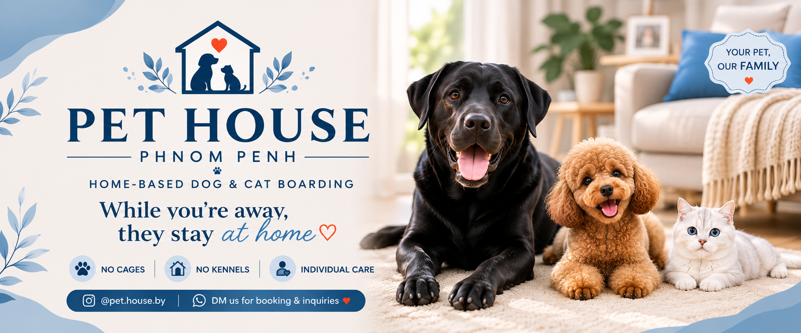

犬のお預かり
いつもの習慣に合わせて散歩、遊び、食事、休息を行います。建物内には犬用の散歩スペースもあります。
 Pet Houseプノンペンの家庭型ペット預かり
Pet Houseプノンペンの家庭型ペット預かり

プノンペンの家庭型ペット預かり
Pet Houseはカンボジア・プノンペンで犬と猫をお預かりする家庭型のサービスです。ケージ中心のペットホテルではなく、冷房のある住まいで、普段の生活リズムに合わせてお世話します。
いつもの習慣に合わせて散歩、遊び、食事、休息を行います。建物内には犬用の散歩スペースもあります。
落ち着いた家庭環境で、食事や休息のペースを大切にしながらお世話します。
犬猫以外の動物については、受け入れ可能か事前にお問い合わせください。
お預かりする頭数を制限し、一匹ずつ丁寧に対応します。写真・動画を定期的にお送りします。事前見学もご相談いただけます。食事、薬、ワクチン、特別なケアについてお知らせください。
はい。事前にご連絡いただければ、見学・面会の日程をご相談できます。
プノンペン市内の送迎は、日程や場所によりご相談可能です。
PET HOUSE • PHNOM PENH, CAMBODIA
ペットの種類、年齢、希望日程、性格、特別なケアの必要性をお知らせください。空き状況と料金をご案内します。